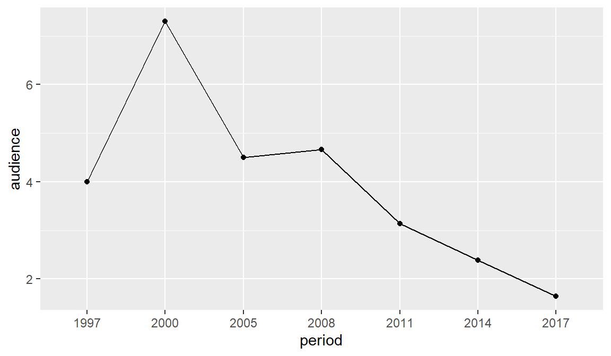

Klan-assignment-20230426
KLAN (TV Series)
Klan is a Polish soap opera that premiered on September 22, 1997 on the public TVP1 channel. With more than 4,000 episodes spanning 25 seasons, the show is the longest-running Polish TV series. It airs from Monday to Friday at 5.50 p.m. on TVP1.
Klan revolves around the fates of the multi-generation Lubicz family from Warsaw.
Klan logo

Basic statistics
| Period | No. views |
|---|---|
| 1997 | 4m |
| 2005 | 4.5m |
| 2021/2022 | 1.09 |
| Platform | Rating |
|---|---|
| IMdB | 2/10 |
| Filweb | 2.8/10 |